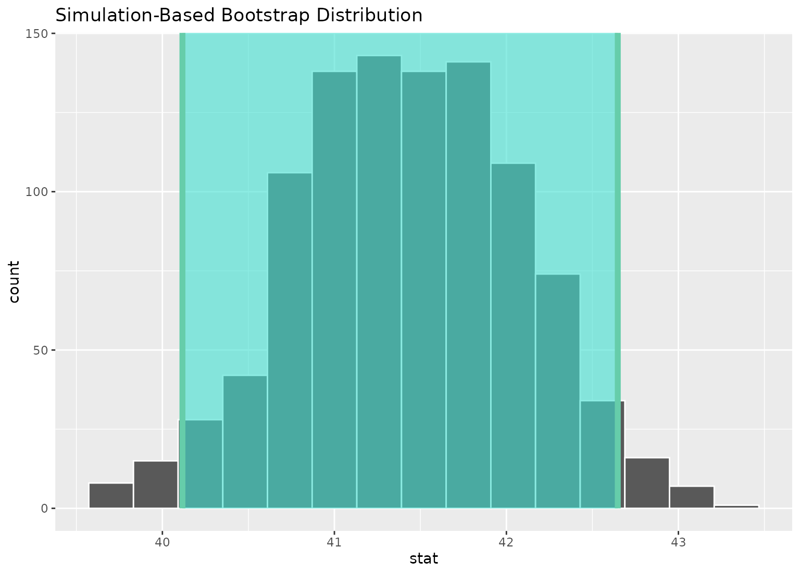
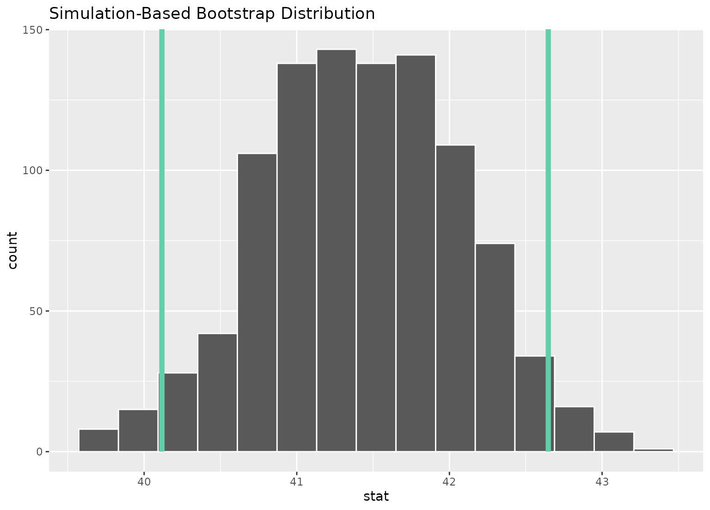
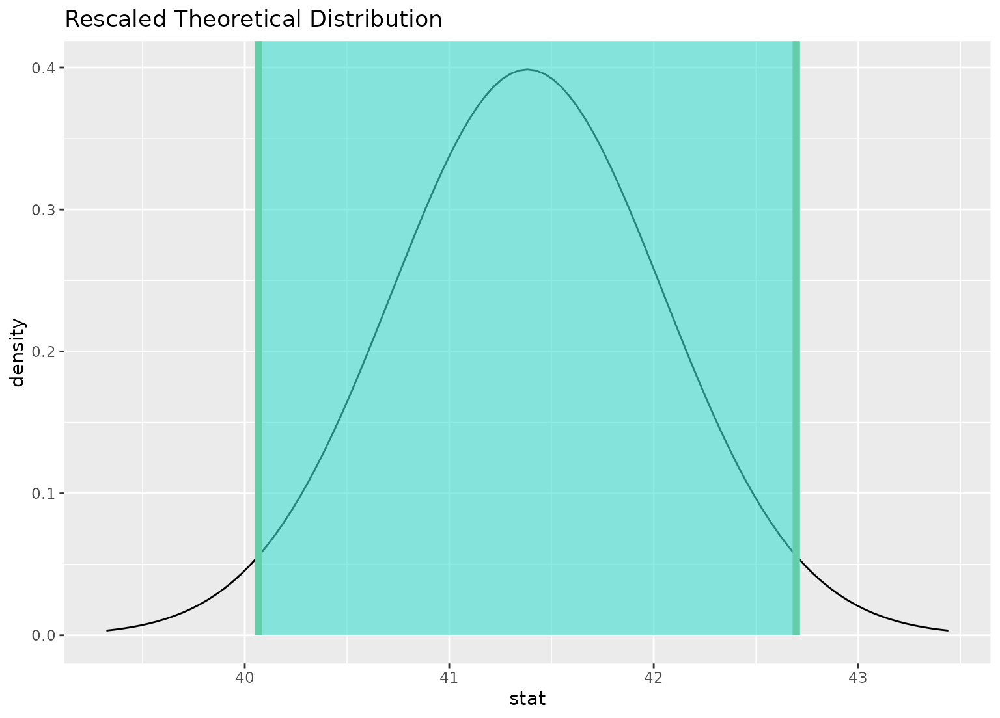
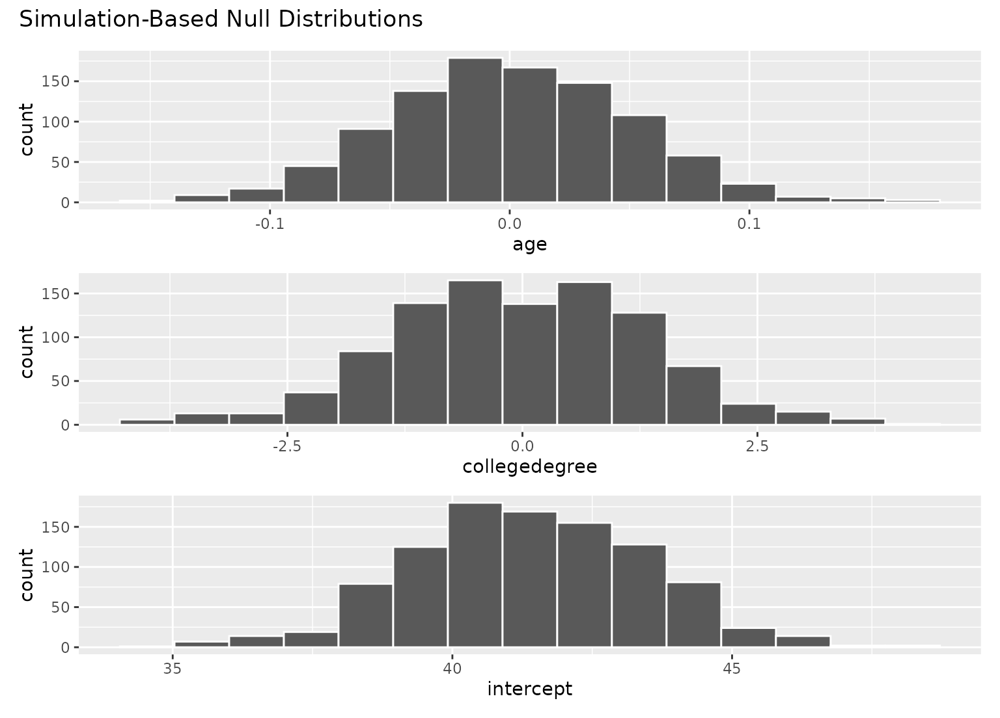

Add information about confidence interval
Source:R/shade_confidence_interval.R
shade_confidence_interval.Rdshade_confidence_interval() plots a confidence interval region on top of
visualize() output. The output is a ggplot2 layer that can be added with
+. The function has a shorter alias, shade_ci().
Learn more in vignette("infer").
Usage
shade_confidence_interval(
endpoints,
color = "mediumaquamarine",
fill = "turquoise",
...
)
shade_ci(endpoints, color = "mediumaquamarine", fill = "turquoise", ...)Arguments
- endpoints
The lower and upper bounds of the interval to be plotted. Likely, this will be the output of
get_confidence_interval(). Forcalculate()-based workflows, this will be a 2-element vector or a1 x 2data frame containing the lower and upper values to be plotted. Forfit()-based workflows, a(p + 1) x 3data frame with columnsterm,lower_ci, andupper_ci, giving the upper and lower bounds for each regression term. For use in visualizations ofassume()output, this must be the output ofget_confidence_interval().- color
A character or hex string specifying the color of the end points as a vertical lines on the plot.
- fill
A character or hex string specifying the color to shade the confidence interval. If
NULLthen no shading is actually done.- ...
Other arguments passed along to ggplot2 functions.
Value
If added to an existing infer visualization, a ggplot2
object displaying the supplied intervals on top of its corresponding
distribution. Otherwise, an infer_layer list.
See also
Other visualization functions:
shade_p_value()
Examples
# find the point estimate---mean number of hours worked per week
point_estimate <- gss %>%
specify(response = hours) %>%
calculate(stat = "mean")
# ...and a bootstrap distribution
boot_dist <- gss %>%
# ...we're interested in the number of hours worked per week
specify(response = hours) %>%
# generating data points
generate(reps = 1000, type = "bootstrap") %>%
# finding the distribution from the generated data
calculate(stat = "mean")
# find a confidence interval around the point estimate
ci <- boot_dist %>%
get_confidence_interval(point_estimate = point_estimate,
# at the 95% confidence level
level = .95,
# using the standard error method
type = "se")
# and plot it!
boot_dist %>%
visualize() +
shade_confidence_interval(ci)

# or just plot the bounds
boot_dist %>%
visualize() +
shade_confidence_interval(ci, fill = NULL)

# you can shade confidence intervals on top of
# theoretical distributions, too---the theoretical
# distribution will be recentered and rescaled to
# align with the confidence interval
sampling_dist <- gss %>%
specify(response = hours) %>%
assume(distribution = "t")
visualize(sampling_dist) +
shade_confidence_interval(ci)

# \donttest{
# to visualize distributions of coefficients for multiple
# explanatory variables, use a `fit()`-based workflow
# fit 1000 linear models with the `hours` variable permuted
null_fits <- gss %>%
specify(hours ~ age + college) %>%
hypothesize(null = "independence") %>%
generate(reps = 1000, type = "permute") %>%
fit()
null_fits
#> # A tibble: 3,000 × 3
#> # Groups: replicate [1,000]
#> replicate term estimate
#> <int> <chr> <dbl>
#> 1 1 intercept 40.8
#> 2 1 age 0.0153
#> 3 1 collegedegree -0.0626
#> 4 2 intercept 40.3
#> 5 2 age 0.0278
#> 6 2 collegedegree -0.0655
#> 7 3 intercept 42.8
#> 8 3 age -0.0348
#> 9 3 collegedegree 0.0726
#> 10 4 intercept 40.7
#> # ℹ 2,990 more rows
# fit a linear model to the observed data
obs_fit <- gss %>%
specify(hours ~ age + college) %>%
fit()
obs_fit
#> # A tibble: 3 × 2
#> term estimate
#> <chr> <dbl>
#> 1 intercept 40.6
#> 2 age 0.00596
#> 3 collegedegree 1.53
# get confidence intervals for each term
conf_ints <-
get_confidence_interval(
null_fits,
point_estimate = obs_fit,
level = .95
)
# visualize distributions of coefficients
# generated under the null
visualize(null_fits)

# add a confidence interval shading layer to juxtapose
# the null fits with the observed fit for each term
visualize(null_fits) +
shade_confidence_interval(conf_ints)
 # }
# more in-depth explanation of how to use the infer package
if (FALSE) { # \dontrun{
vignette("infer")
} # }
# }
# more in-depth explanation of how to use the infer package
if (FALSE) { # \dontrun{
vignette("infer")
} # }